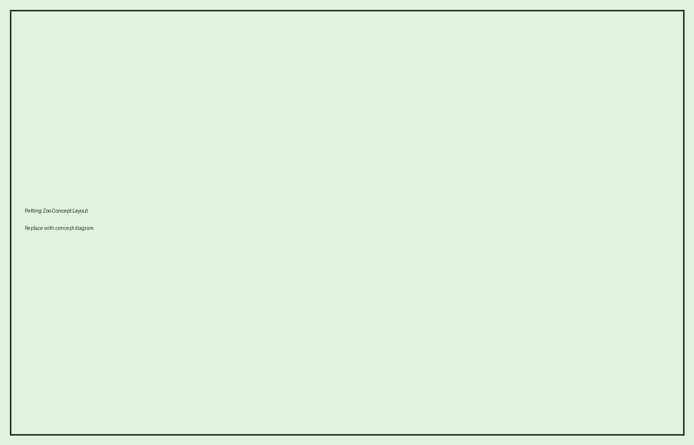

A hands-on animal experience designed for families.
Displayed in full and ready to replace with your real logo.

Replace this with your final concept diagram when ready.
Structured flow supports safety, capacity, and a better guest experience.
Entry, feed cups, and orientation.
Goats, sheep, rabbits, and barnyard favourites.
Walk-by viewing for special species and aviaries.
Picnic tables and rest area.
Premium encounters and special animal moments.
Interpretive centre + animal talks.